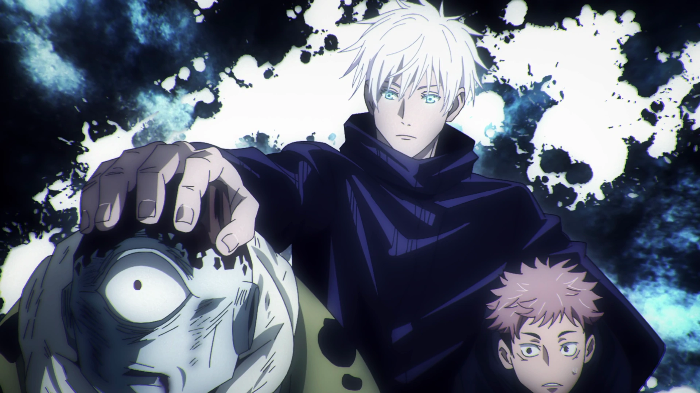
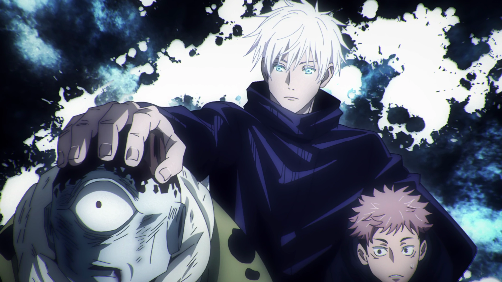

Satoru Gojo is the pride of the Gojo Family, since he was the first person to be born with the Limitless and Six Eyes in four hundred years. When he was born, it was said that he changed the balance of the world. Even among special grade sorcerers, Satoru is known to be the strongest socercer in the series.
Satoru Gojo also manages to save promising jujutsu sorcerers from execution by defying higher-ups. He saved people like Yuuji Itadora, Yuuta, and became Megumi Fushiguro's endorser.
Penatibus et magnis dis parturient montes nascetur ridiculus. A diam maecenas sed enim ut sem. Nunc congue nisi vitae suscipit. Parturient montes nascetur ridiculus mus mauris vitae. Mauris sit amet massa vitae tortor condimentum lacinia quis vel. Feugiat vivamus at augue eget arcu. Gravida in fermentum et sollicitudin ac orci.Penatibus et magnis dis parturient montes nascetur ridiculus. A diam maecenas sed enim ut sem. Nunc congue nisi vitae suscipit. Parturient montes nascetur ridiculus mus mauris vitae. Mauris sit amet massa vitae tortor condimentum lacinia quis vel. Feugiat vivamus at augue eget arcu. Gravida in fermentum et sollicitudin ac orci.Penatibus et magnis dis parturient montes nascetur ridiculus. A diam maecenas sed enim ut sem. Nunc congue nisi vitae suscipit. Parturient montes nascetur ridiculus mus mauris vitae. Mauris sit amet massa vitae tortor condimentum lacinia quis vel. Feugiat vivamus at augue eget arcu. Gravida in fermentum et sollicitudin ac orci.
 
